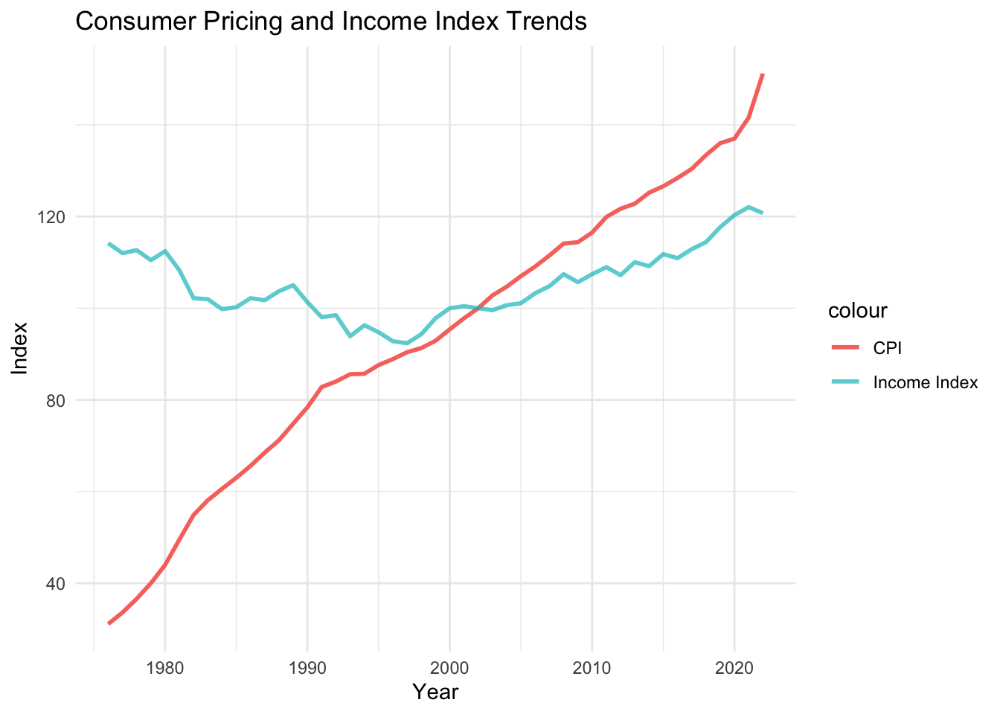
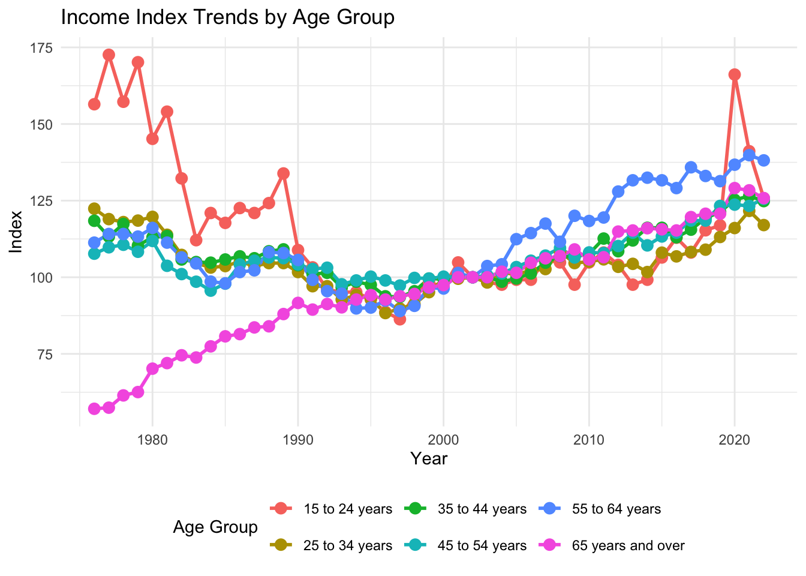
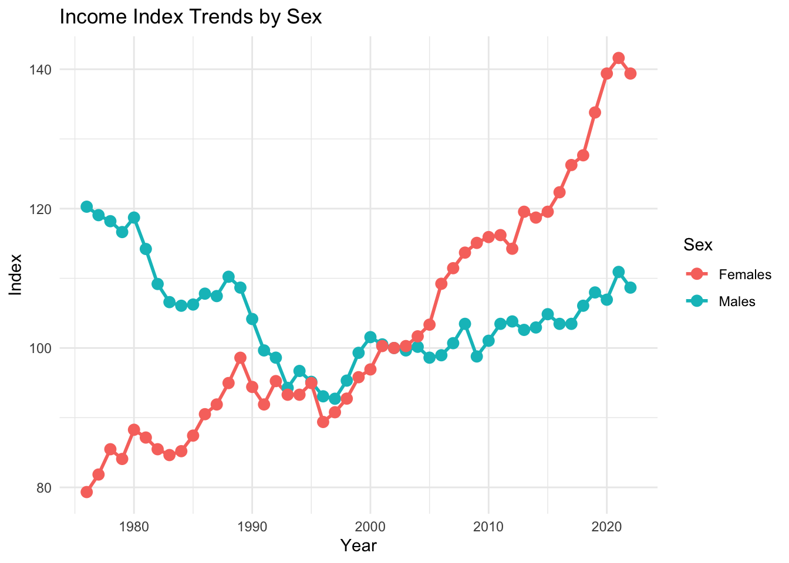
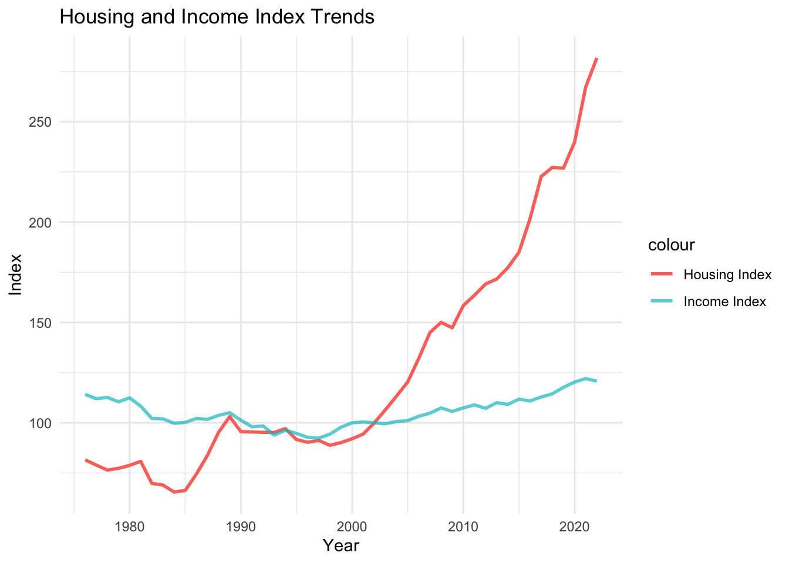
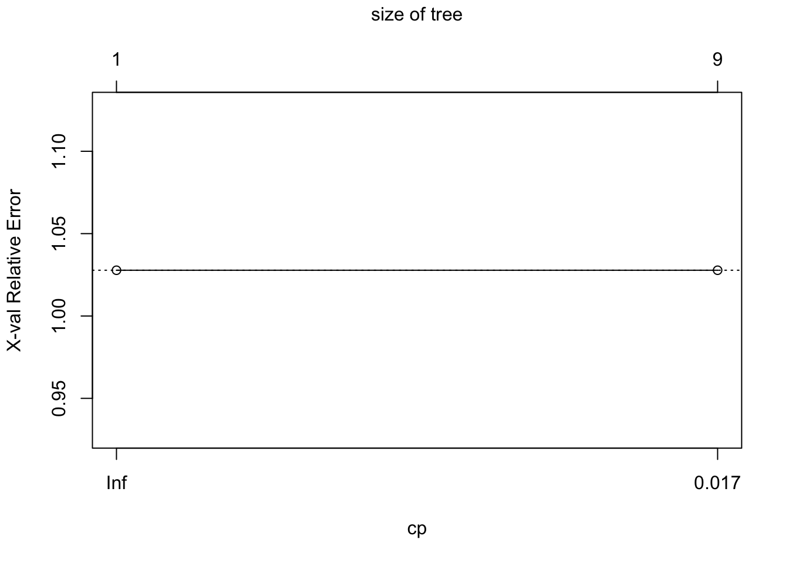

Link to GitHub repository.
The data set was too large to include in the GitHub repository. I’ve added a link to where the data was acquired.
In recent years, the cost of living in Canada has risen significantly, making it increasingly difficult for salaries to keep pace. For many young people entering the workforce, home ownership feels less and less attainable, while those who already own real estate are seeing their assets appreciate in value. This has fueled the common belief that the older generation had a much easier time achieving financial stability than younger people today.
With this in mind, some interesting questions to ask are:
Has the median income of Canadians kept up with inflation?
How has the median income changed throughout the years for young and old people? what about for men and women?
How does the change in income compare with the change in housing prices?
The first data set is called ‘Income of individuals by age group, sex and income source, Canada, provinces and selected census metropolitan areas’, and contains detailed information about annual income from 1976 until 2022. It also divides the data into the different provinces and territories of Canada, as well as different demographics.
The second data set is called ‘Consumer Price Index, annual average, not seasonally adjusted’, and features the consumer Price index of many common products, ranging from 1914 until 2024. The CPI is a useful statistic for measuring inflation, as it serves as a direct way to compare purchasing power throughout each year.
The final data set is called ‘Analytical house prices indicators’, and similar to the above consumer price index, features the change in average house price. Although housing was contained in the above data set, it uses a different definition of housing which involves rent prices, whereas this analysis seeks to understand housing ownership.
The income and CPI data sets were taken directly from the Statcan website.
Housing price index was downloaded from OECD.
Finally, we convert each data set to use 2002 as its benchmark. This is done by adjusting all of the data sets so that 2002 has an index value of 100, and every other year is adjusted by this same value.
We will keep these data sets separate, and merge them as needed for each question.
Lets first examine the income data set. It contains the median income of Canadians from 1976 until 2022, and has information on male, female, and both sexes. Additionally, it features a variety of age groups for comparison.
An extremely interesting point to note is the years and demographics which had the largest income index are young men aged 15-24 in the 1970s, and older women aged 55-64 in the 2010s and 2020s. This is most because during the 1970s, it was more common for teenage boys to work, as well as the fact that more women have joined the workforce compared to before.
The lowest income index is mainly comprised of older people aged 55-64 in the 1970s. This is most likely because retirement benefits have improved by a lot since then.
Its also important to note that this does not mean these people made the most or least amount of money, rather, the group that had the highest or lowest income within their own group, adjusted for inflation.
| Year | Age.group | Value | Sex | Adjusted.value |
|---|---|---|---|---|
| 2020 | 55 to 64 years | 41200 | Females | 190.7407 |
| 2022 | 55 to 64 years | 41100 | Females | 190.2778 |
| 1977 | 15 to 24 years | 24600 | Males | 189.2308 |
| 1979 | 15 to 24 years | 24600 | Males | 189.2308 |
| 2021 | 55 to 64 years | 40800 | Females | 188.8889 |
| 1978 | 15 to 24 years | 23600 | Males | 181.5385 |
| Year | Age.group | Value | Sex | Adjusted.value |
|---|---|---|---|---|
| 1976 | 65 years and over | 21100 | Males | 60.11396 |
| 1977 | 65 years and over | 14000 | Females | 59.07173 |
| 1976 | 65 years and over | 13700 | Females | 57.80591 |
| 1977 | 65 years and over | 15800 | Both sexes | 57.45455 |
| 1976 | 65 years and over | 15700 | Both sexes | 57.09091 |
| 1977 | 65 years and over | 19500 | Males | 55.55556 |
Moving on to the CPI data set, it appears that not only are cigarettes and tobacco more expensive now than ever, but that it also had its cheapest recorded prices in the 1970s. The price of nicotine products has been steadily increasing in order to encourage users to quit, which would explain the tripling in prices since 2002.
Additionally, oil in recent years is also at an all time high, most likely due to the ongoing conflicts around the world.
Conversely, we see that digital computing equipment has decreased by a multiple of 30 between 1990 and 2024, as computers and phones have become more accessible in recent years.
| Year | Value | Products.and.product.groups | |
|---|---|---|---|
| 105 | 1976 | 11.9 | Tobacco products and smokers’ supplies |
| 106 | 1976 | 12.0 | Cigarettes |
| 12077 | 2024 | 12.7 | Digital computing equipment and devices |
| 80 | 1976 | 12.9 | Air transportation |
| 228 | 1977 | 12.9 | Tobacco products and smokers’ supplies |
| 229 | 1977 | 13.0 | Cigarettes |
| Year | Value | Products.and.product.groups | |
|---|---|---|---|
| 12117 | 2024 | 323.7 | Cigarettes |
| 11967 | 2024 | 342.9 | Homeowners’ home and mortgage insurance |
| 11719 | 2023 | 345.2 | Fuel oil and other fuels |
| 4458 | 1996 | 357.7 | Digital computing equipment and devices |
| 11464 | 2022 | 388.7 | Fuel oil and other fuels |
| 4187 | 1995 | 390.0 | Digital computing equipment and devices |
Taking a look at the overall CPI, filtering on “all items”, we see that a dollar in 1976 is worth approximately $5.17 today. Although this is more of a generalization, it is the statistic which best captures inflation.
| Year | Value | Products.and.product.groups |
|---|---|---|
| 1976 | 31.1 | All-items |
| 2024 | 160.9 | All-items |
And just for fun, it appears that egg prices have also increased by a factor of 5.
| Year | Value | Products.and.product.groups |
|---|---|---|
| 1976 | 46.3 | Eggs |
| 2024 | 220.5 | Eggs |
Finally, we take a look at the housing index.
| Year | Value | Adjusted.value | |
|---|---|---|---|
| 1 | 1970 | 31.03392 | 57.38909 |
| 2 | 1971 | 31.66271 | 58.55187 |
| 3 | 1972 | 32.70961 | 60.48785 |
| 15 | 1984 | 35.43767 | 65.53267 |
| 16 | 1985 | 35.87106 | 66.33411 |
| 4 | 1973 | 36.92775 | 68.28818 |
| Year | Value | Adjusted.value | |
|---|---|---|---|
| 49 | 2018 | 122.8595 | 227.1963 |
| 51 | 2020 | 129.6595 | 239.7713 |
| 54 | 2023 | 143.8154 | 265.9489 |
| 52 | 2021 | 144.4989 | 267.2128 |
| 55 | 2024 | 144.6847 | 267.5564 |
| 53 | 2022 | 152.3432 | 281.7187 |
It should be no surprise that housing prices have also increased by a lot since the 70s, with prices reaching around recent years. Although these results appear to be aligned with the other products earlier, the housing data takes an average across all of Canada. Observing data sets of Vancouver or Toronto would most likely yield more extreme results.
Now lets revisit some of our earlier questions from part 1.
Based on this output, we see that the CPI has been steadily increasing, and looks to be accelerating in growth since 2020. However, the income index of Canadians has mostly remained stagnant.

What about for men and women?
We see that older Canadians have had an income increase, whereas younger Canadians have an income decrease. Factors include less children working, seniors having later retirements, as well as retirement benefits in the 21st century.
We also see that women have had an increase in their annual income, most likely due to the fact historically, less women were part of the workforce.


For this question, we will look at Canadians of both sexes, aged 25-54. We see that the Canadian income index has not been able to keep up with the housing index.

library(tidyr)
library(dplyr)
cpi_reshape <- cpi %>%
pivot_wider(
names_from = Products.and.product.groups, # New column names will come from the "Product" column
values_from = Value # Values will come from the "CPI" column
)cpi_reshape_clean <- cpi_reshape |>
select(Year, Food, Gasoline, "Mortgage interest cost", "Health care", "Dental care services",
"Education", "Property taxes and other special charges", "Transportation", "Alcoholic beverages", "Child care services", "Toiletry items and cosmetics")
cpi_reshape_clean <- merge(cpi_reshape_clean, housing, by = "Year", all.x = TRUE)cpi_reshape_clean <- cpi_reshape_clean %>%
rename_with(~ gsub(" ", ".", .), everything())model <- lm(Adjusted.value ~ Food + `Mortgage.interest.cost` +
`Health.care` + `Property.taxes.and.other.special.charges` + Year + Gasoline +
Transportation
, data = cpi_reshape_clean)
# View the model summary
summary(model)##
## Call:
## lm(formula = Adjusted.value ~ Food + Mortgage.interest.cost +
## Health.care + Property.taxes.and.other.special.charges +
## Year + Gasoline + Transportation, data = cpi_reshape_clean)
##
## Residuals:
## Min 1Q Median 3Q Max
## -22.044 -7.492 1.147 8.395 25.352
##
## Coefficients:
## Estimate Std. Error t value Pr(>|t|)
## (Intercept) 614.4861 5379.6564 0.114 0.909618
## Food 1.5400 0.5804 2.653 0.011287
## Mortgage.interest.cost -0.2958 0.3254 -0.909 0.368779
## Health.care -2.4445 0.8199 -2.981 0.004812
## Property.taxes.and.other.special.charges 1.9477 0.5138 3.791 0.000485
## Year -0.2863 2.7342 -0.105 0.917107
## Gasoline 0.2758 0.1476 1.869 0.068813
## Transportation -0.4112 0.6161 -0.668 0.508181
##
## (Intercept)
## Food *
## Mortgage.interest.cost
## Health.care **
## Property.taxes.and.other.special.charges ***
## Year
## Gasoline .
## Transportation
## ---
## Signif. codes: 0 '***' 0.001 '**' 0.01 '*' 0.05 '.' 0.1 ' ' 1
##
## Residual standard error: 11.8 on 41 degrees of freedom
## Multiple R-squared: 0.9702, Adjusted R-squared: 0.9651
## F-statistic: 190.9 on 7 and 41 DF, p-value: < 2.2e-16summary(model)$adj.r.squared## [1] 0.965149library(mgcv)## Loading required package: nlme##
## Attaching package: 'nlme'## The following object is masked from 'package:dplyr':
##
## collapse## This is mgcv 1.9-1. For overview type 'help("mgcv-package")'.gam_model <- gam(Adjusted.value ~ s(Year) + Food + `Mortgage.interest.cost` +
`Health.care` + `Property.taxes.and.other.special.charges` + Gasoline +
Transportation, data = cpi_reshape_clean)
summary(gam_model)##
## Family: gaussian
## Link function: identity
##
## Formula:
## Adjusted.value ~ s(Year) + Food + Mortgage.interest.cost + Health.care +
## Property.taxes.and.other.special.charges + Gasoline + Transportation
##
## Parametric coefficients:
## Estimate Std. Error t value Pr(>|t|)
## (Intercept) 276.8613 91.0782 3.040 0.004544
## Food -0.7203 0.5173 -1.392 0.172897
## Mortgage.interest.cost -0.5207 0.1410 -3.693 0.000777
## Health.care 2.0720 0.9799 2.115 0.041915
## Property.taxes.and.other.special.charges -1.6141 0.6598 -2.447 0.019776
## Gasoline 0.2139 0.1375 1.556 0.129108
## Transportation -0.7574 0.6128 -1.236 0.224998
##
## (Intercept) **
## Food
## Mortgage.interest.cost ***
## Health.care *
## Property.taxes.and.other.special.charges *
## Gasoline
## Transportation
## ---
## Signif. codes: 0 '***' 0.001 '**' 0.01 '*' 0.05 '.' 0.1 ' ' 1
##
## Approximate significance of smooth terms:
## edf Ref.df F p-value
## s(Year) 8.163 8.816 30.13 <2e-16 ***
## ---
## Signif. codes: 0 '***' 0.001 '**' 0.01 '*' 0.05 '.' 0.1 ' ' 1
##
## R-sq.(adj) = 0.995 Deviance explained = 99.7%
## GCV = 26.514 Scale est. = 18.31 n = 49library(caret)## Loading required package: latticeproject_train_index <- createDataPartition(cpi_reshape_clean$Adjusted.value, p = 0.7, list = FALSE)
project_train <- cpi_reshape_clean[project_train_index, ]
project_test <- cpi_reshape_clean[-project_train_index, ]tree <- rpart(Adjusted.value ~ .,
data = project_train,
method = "class",
control = rpart.control(minsplit = 10,
minbucket = 3,
cp = 0.01,
xval = 10))plotcp(tree)
printcp(tree)##
## Classification tree:
## rpart(formula = Adjusted.value ~ ., data = project_train, method = "class",
## control = rpart.control(minsplit = 10, minbucket = 3, cp = 0.01,
## xval = 10))
##
## Variables actually used in tree construction:
## [1] Value Year
##
## Root node error: 36/37 = 0.97297
##
## n= 37
##
## CP nsplit rel error xerror xstd
## 1 0.027778 0 1.00000 1.0278 0
## 2 0.010000 8 0.77778 1.0278 0optimalcp = tree$cptable[which.min(tree$cptable[, "xerror"]), "CP"]tree_prune <- prune(tree, cp = optimalcp)bag<- randomForest(Adjusted.value~ .,
data = project_train,
mtry = ncol(project_train) - 1,
importance = TRUE,
na.action = na.omit)
# oob error rate
bag_oob <- bag$mse[length(bag$mse)]
bag_oob## [1] 82.77037importance(bag)## %IncMSE IncNodePurity
## Year 7.350398 10036.5416
## Food 7.496565 11122.2247
## Gasoline 4.855217 5878.1777
## Mortgage.interest.cost 1.720891 486.8253
## Health.care 8.040724 10435.9645
## Dental.care.services 7.675635 9559.9199
## Education 7.652530 10562.7072
## Property.taxes.and.other.special.charges 7.588603 11609.6524
## Transportation 8.036870 8807.4847
## Alcoholic.beverages 7.753345 9675.0280
## Child.care.services 7.827193 9510.7225
## Toiletry.items.and.cosmetics 6.440890 7514.5100
## Value 11.953134 23355.3560rf <- randomForest(Adjusted.value ~ .,
data = project_train,
importance = TRUE,
na.action = na.omit)
#oob error rate
rf_oob <- rf$mse[length(rf$mse)]
rf_oob## [1] 77.6244importance(rf)## %IncMSE IncNodePurity
## Year 8.965246 12735.6929
## Food 8.942856 12983.6146
## Gasoline 5.057827 4408.1797
## Mortgage.interest.cost 2.759764 417.3676
## Health.care 8.533162 12548.9317
## Dental.care.services 8.381505 12101.5978
## Education 7.770784 11640.5419
## Property.taxes.and.other.special.charges 8.166033 12946.3123
## Transportation 7.632600 10454.2995
## Alcoholic.beverages 8.082398 11533.5972
## Child.care.services 7.282770 9649.4225
## Toiletry.items.and.cosmetics 5.611084 6735.9145
## Value 8.339564 11392.3084library(knitr)
model_performance <- data.frame(
Model = c(
"Bagging",
"Random Forest"
),
Error_MSE = c(
bag_oob,
rf_oob
)
)
kable(model_performance, col.names = c("Model", "Error / MSE"), caption = "Model Performance Comparison")| Model | Error / MSE |
|---|---|
| Bagging | 82.77037 |
| Random Forest | 77.62440 |
predictions <- predict(model)
residuals <- cpi_reshape_clean$Adjusted.value - predictions
MSE <- mean(residuals^2)
print(MSE)## [1] 116.4158gam_predictions <- predict(gam_model)
gam_residuals <- cpi_reshape_clean$Adjusted.value - gam_predictions
gam_MSE <- mean(gam_residuals^2)
print(gam_MSE)## [1] 12.64391